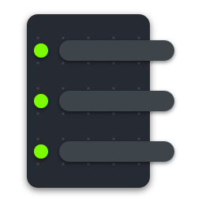

EscribalYour documents write themselves.
Escribal builds them from instructions you set up once and run forever: it reads your data from Excel, CSV, JSON or PostgreSQL, does the maths, and writes Word, Excel, PowerPoint or PDF. No programming, on your own computer, with your AI assistant.
Get it from the Microsoft StoreFor Windows 10 and 11 · USD 19.99 per year
- More than 700 instructions across eight formats: Word, Excel, PowerPoint, PDF, Markdown, JSON, CSV and plain text.
- Loops, conditions and exact calculations, so the same workflow works with next month's data.
- Your files never leave your computer.